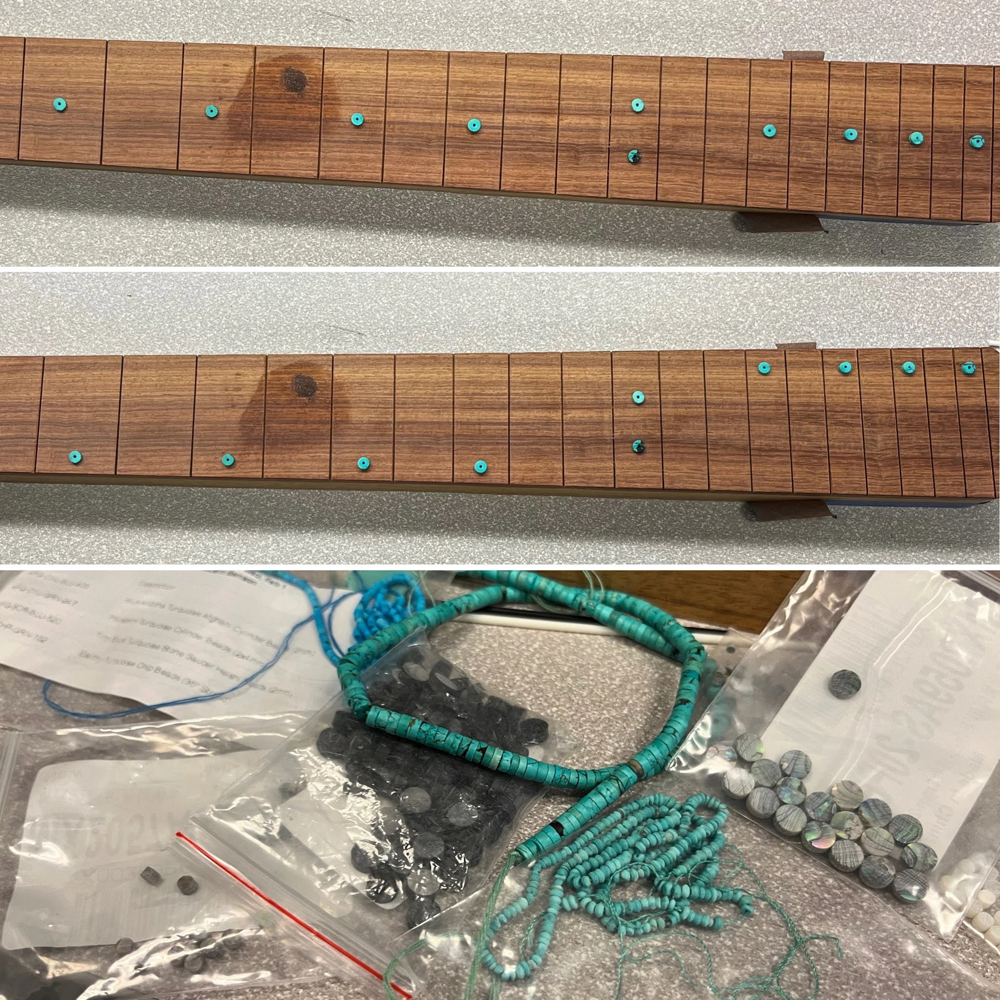

Custom fretboard inlays
Turquoise dots set into Granadillo. See the work and watch the reel.

Custom fretboard inlays, fretwork, and neck projects from my small Los Angeles workshop.


I’m Justin Benson. Moon & Pearl is my small, veteran-owned lutherie workshop in North Hollywood. I work on custom inlays, fretwork, and neck projects around my day job.
Some days that means working on a neck. Other days it means finding a better way to hold a very small thing.
Currently considering inlay, fretwork, and neck projects. Complete guitar commissions are closed. Tell me about your neck or fretboard and what you have in mind.